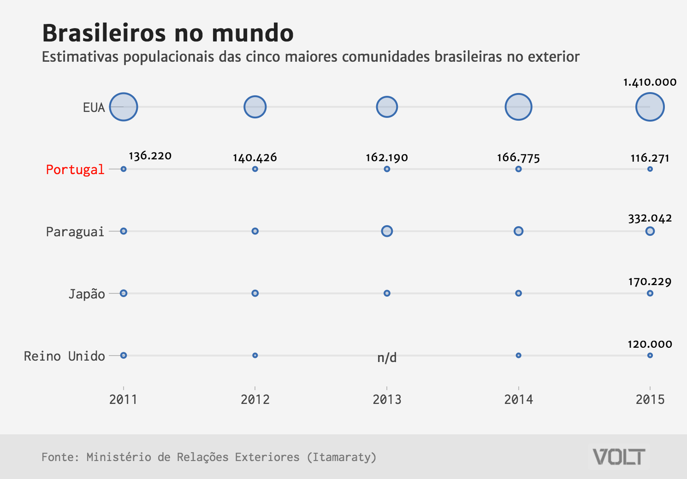
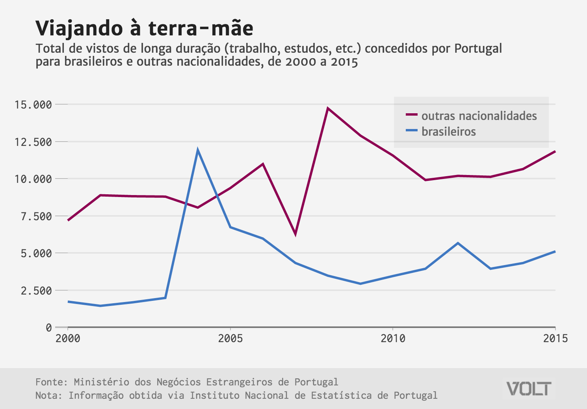

Seria Portugal o novo destino dos imigrantes brasileiros? Os dados dizem que não

Descrição
Você pode ter lido na imprensa nas últimas semanas que parece estar em curso uma verdadeira diáspora brasileira para Portugal, motivada pela crise econômica nacional e pelo endurecimento nas regras imigratórias no principal destino dos brasileiros, os Estados Unidos.
O jornal Folha de S.Paulo cravou dia 23/04: “Desencanto e crise impulsionam êxodo de brasileiros abastados para Lisboa”. Já reportagem da regista Veja publicada em 20 de abril afirma: “Com segurança, bons serviços públicos e economia em alta, Portugal atrai mais imigrantes brasileiros com boa renda — de universitários a aposentados”.
Valendo-se de interessantes narrativas baseadas em personagens e dados de recorte curto (geralmente apenas um ou dois anos de série), as reportagens giram em torno de pessoas de classe média alta ou ricos buscando a terra-mãe como zona de conforte frente às turbulências políticas e econômicas na ex-colônia. É um caso válido, sem dúvida.
Mas, a não ser que tenha começado uma verdadeira revolução imigratória a partir do ano passado, a série histórica de dados oficiais de Portugal (mais recentes até fim de 2015) - tanto para imigração permanente quanto para concessão de vistos de longa duração - não sugere nada parecido com as histórias românticas sobre o redescobrimento de Portugal, algo que a revista Isto É chamou de “Descobrimento às avessas” - inclusive fazendo uma comparação equivocada: para imigrantes residentes, aparentemente utilizou dados de Portugal para 2014 e dados do Itamaraty para 2016 (embora os mais atuais sejam relativos a 2015, publicados em 2016).
Inclusive, a partir da crise portuguesa, no fim da década passada, o número de brasileiros morando no país caiu levemente frente ao pico de 2010 (119 mil brasileiros residentes). Em 2015, havia pouco mais de 80 mil brasileiros no país.
De fato, o número de vistos de longa duração cresceu em três quartos desde 2009, para mais de 5.000 em 2015, mas isso é uma pequena parte dos quase 12 mil vistos concedidos em 2004. Teria Portugal sido “redescoberta” há mais de uma década, então?
Se você não quiser se basear em informações lusitanas, dados do Itamaraty, embora diferentes, também sugerem a mesma coisa - inclusive com uma queda maior. Além disso, das cinco maiores comunidades brasileiras, Portugal ficou em último nessa lista, atrás até de Reino Unido.

Claro, pode-se haver a impressão de que mais pessoas estão saindo ou procurando sair do Brasil por conta do que tem acontecido por aqui, praticamente em tudo: economia, violência, política etc. Além disso, a crise se alongou por 2016, e ainda não há dados consolidados para o ano passado. E pode-se, ainda, argumentar que Portugal seja um bom destino, com alguns indicadores melhores do que aqui, maior expectativa de vida e PIB per capita superior (apesar de leve queda desde 2009).
No entanto, esse “redescobrimento” precisa ser provado. Por enquanto, está mais no mundo da prosa do que dos dados.

Nota do INE, referente aos dados no gráfico 1: “Em comparação com 2005 verificou-se em 2006 e anos seguintes um incremento no número de solicitações de títulos de residência, incorrendo para um acréscimo no número de estrangeiros com estatuto de residente. Este aumento resultou da possibilidade de conversão das autorizações de permanência e dos vistos de longa duração em autorizações de residência ao abrigo dos decretos-Lei 244/98 de 8 de agosto e 34/2003 de 25 de fevereiro e da Lei 23/2007 de 4 de julho, relativa à entrada e permanência de estrangeiros em território nacional.”
Referências
- Ministério dos Negócios Estrangeiros/Direção Geral dos Assuntos Consulares e das Comunidades Portuguesas, com dados fornecidos via pedido do Volt ao Instituto Nacional de Estatística - INE de Portugal.
- Serviço de Estrangeiros e Fronteiras - SEF, , com dados fornecidos via pedido do Volt ao Instituto Nacional de Estatística - INE de Portugal.
- Ministério de Relações Exteriores do Brasil - MRE/Itamaraty, com dados do site “Brasileiros no Mundo”.
Publicação alterada em 25.04.2017 para acrescentar nota do INE no fim do texto